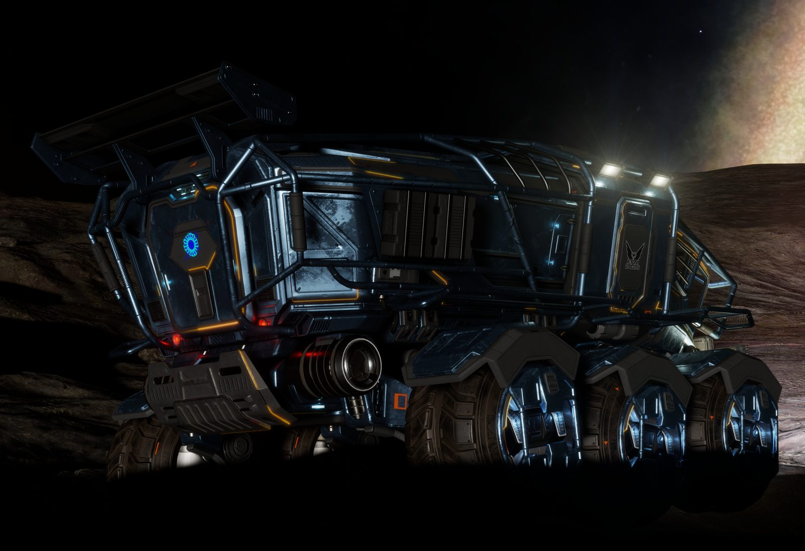
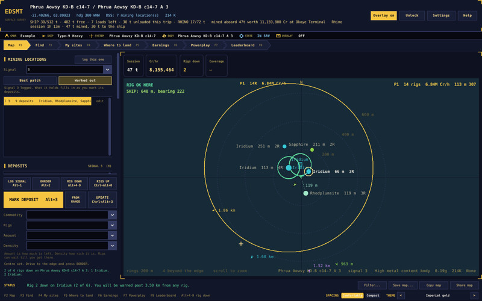
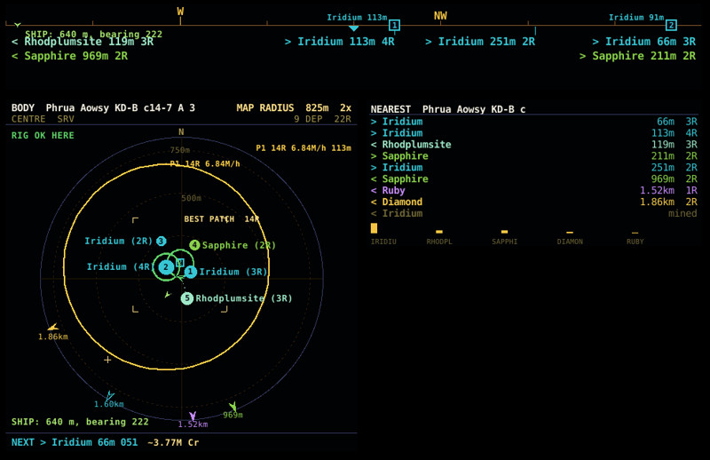
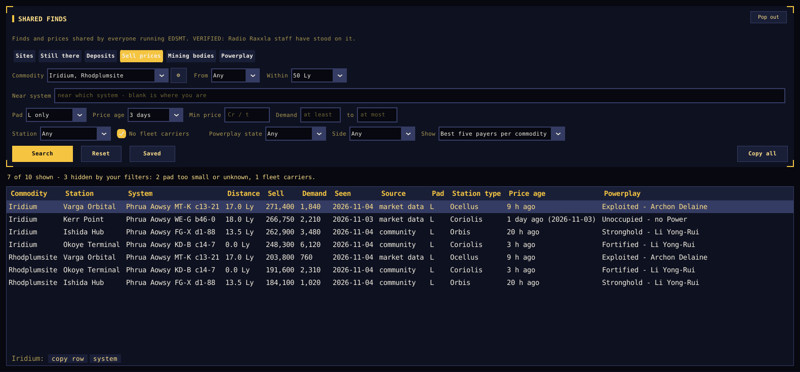
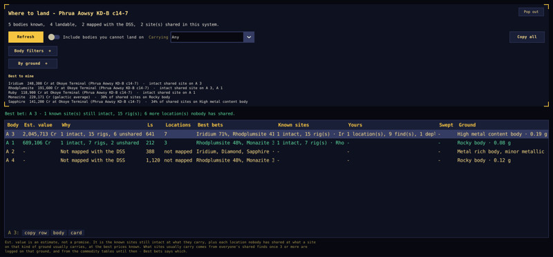
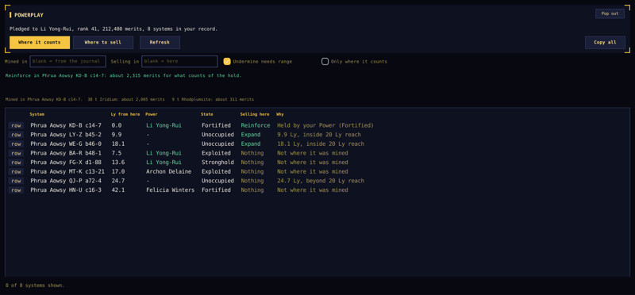
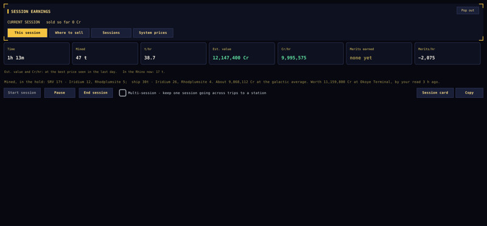

EDSMT
Elite Dangerous Surface Mining Tool
A surface mining companion for the Rhino. It reads your Elite Dangerous journal, so the system, the body, your position and what you mined all come from the game — you never type a coordinate.
Free · Windows and Linux · No account · GPL-3.0
Build 1.2 Elite Dangerous 4.4.2.0 What changed Source: github.com/RadioRaxxla/EDSMT

EDSMT in numbers
What came in lately · every number is counted from what commanders have shared, and nothing here says where on a body anything is.
What it does

Map and rigs
Every deposit you mark, where it is, with the trail you drove and a ring round each rig.

Overlay
A compass tape, a scope and a targets list over the game, so you can drive without leaving it.

Find and selling
Shared sites from other commanders, and where what you mined sells, nearest first.

Where to land
The bodies in the system you are in, ranked by what they are likely to hold.

Powerplay
Whether selling in each system would count for your Power, from your own journal.

Earnings and Discord
The session you are on, with Cr/hr and merits/hr, and a summary for your own Discord channel.
Map and rigs
Drive into a mining location and press a key. EDSMT takes your position from the game the moment you press it, so a deposit records where it is; how far it is and which way to turn are worked out live from wherever you are.
None of these is used by the game's own control schemes. Every one can be changed in Settings.
On the map
- The trail you drove, so you can see the ground you have covered.
- Golden groups: deposits close enough to work in one stop, ringed, with an estimate of what they are worth an hour.
- Rig radar: a ring the rig spacing round every rig you put down, and where the next one fits.
- Density and amount kept apart: how rich a deposit is, and how much of it is left.

The overlay
Boxes over the game, each switched on or off on its own: a compass tape with every recorded deposit, its distance and how many rigs it takes; a scope that zooms 1x, 2x and 4x on a key; the nearest targets; a status line; and a guide that shows the next step and its key. Anything behind you stays pinned to the edge of the tape with a turn arrow rather than dropping off it.
Unlock to drag the boxes where you want them and set the text size of each; lock again and clicks go straight through to the game.
No overlay can draw over a game in exclusive fullscreen. That is DirectX, not EDSMT.

Find and selling
Find searches the community map: sites ranked by rigs, by how many commodities share a patch, and by how recently somebody stood on them, with the distance in light years on every row.
Sell prices answers where it sells, nearest first, for every commodity you tick. Each price says how old it is and where it came from — your own read of a market, another EDSMT user's, or market data — and a price more than a day old is marked stale rather than shown as current.
Filters for pad size, price age, demand, minimum price, station type, fleet carriers and Powerplay state, and saved searches. The count line says how many rows each filter hid, and why.

Where to land
Every body in the system you are in, ranked: the known sites still intact, the mining locations your DSS found that nobody has shared, and what that kind of ground usually carries. Bodies you map while it is open appear without a click, and your older journals are read once so a system you scanned last month is remembered.
The estimated value is an estimate, not a promise, and the window says what it is based on.

Powerplay
EDSMT reads your pledge and the Powerplay state of every system your journal has been in. For the cargo you mined, it shows what selling in each system would do — Expand, Reinforce, Undermine or nothing — and why, with the ranges measured from your own record.
It warns when part of the hold will not count, such as cargo that was bought or went through a fleet carrier, and gives an estimate of the merits the hold should earn. A second page lists the best payers and nearest buyers for what is aboard, with what selling there does for your Power.

Earnings and the Discord summary
A session starts with your first rig down or the first tonne the Rhino refines, and ends when the last rig is up or the Rhino is back aboard. Pause stops the clock for a break or the drive to a station.
The current session shows its time, tonnes, t/hr, what it is worth at the best credible price, Cr/hr and an estimate of Powerplay merits an hour. Both holds are priced, and the table under it keeps every session before, with what was mined, sold and where.
Only what the Rhino dug up is counted. Cargo you bought or hauled is left out.

Your own Discord channel
Paste a channel's webhook in Settings and EDSMT posts a summary of each Rhino session there — tonnes of each commodity, time, t/hr, credits, Cr/hr and where you sold — with the map picture it saves when the Rhino docks. Finds can go there too, if you want them. Send a test message checks the address first.
The picture is also saved on your PC, and Copy map puts it on the clipboard to paste anywhere.
Community sites
Every deposit you mark goes on the community map, and everyone else's comes back to you under Find and on your own map. A map only some people can see never gets filled in.
Surface deposits do not last the way ring hotspots do — Frontier have said they regenerate at a very slow rate — so age is part of the ranking. A site nobody has seen for two months ranks below a smaller one confirmed last week.
Verified means somebody from Radio Raxxla has driven to it and confirmed it. Reported is any commander's find — just as welcome, and most of the map. The app cannot mark its own finds verified, and a verified site still ages like any other.
When your rigs come up, how you laid them out is shared too, and on a deposit with no plan of your own the layout other commanders used shows as pins on the scope.
Go back to a worked-out deposit and find it full, and the map learns how long it took to come back. Every depleted deposit then says what those reports measured.
Live from the community map · Leaderboard (weekly, monthly, Powerplay merits) — everyone who shares a find is on it; Leave in the app takes you off.
This week on the map
The weekly numbers — new sites, commanders, the top of the board and the Powers — are on the weekly update page.
Every find shared from EDSMT is posted to #edsmt-finds on the Radio Raxxla Discord, a few minutes after it is made, with the finder's CMDR name. The weekly update goes to #edsmt-weekly after each Thursday tick.
Privacy
- Your journal is read on your own PC. EDSMT reads the files the game writes for tools like this one. It never reads the game's memory and never presses a key in the game.
- No account, no sign-up, no Frontier login.
- Your notes, sessions and settings stay on your PC, in
%LOCALAPPDATA%\RadioRaxxla\EDSMT.
- What goes on the community map: the deposits you mark — system, body, commodity, position, rigs and how rich — and the prices at markets you open.
- Every find carries your CMDR name, so the leaderboard and the credit for a find are always right.
- Inara and Discord send nothing until you switch them on and add your own key or webhook.
- It is GPL-3.0. The source is on GitHub, so you can read what it sends and when.
Install and system requirements
EDSMT-Setup.exe is a normal installer: a Start menu entry under Radio Raxxla, an optional desktop shortcut and an entry in Add/Remove Programs. It installs for you only, so it never asks for admin. EDSMT.exe is the same program as one portable file.
EDSMT tells you when there is a new version and installs it on one click, after making a backup of your finds and settings.
On Linux, for Elite played through Proton, Lutris,
Heroic or Bottles: EDSMT-linux-x86_64.tar.gz from the
release page
— unpack it and run ./EDSMT — or bash RUN.sh
from the source. It finds the game's journal in whichever Wine prefix you
played in last.
Cloud gaming works where you get a desktop of your own that runs Elite: a cloud Windows PC, or a cloud Linux desktop such as Maximum Settings with the Linux build. Services that stream only the game, such as GeForce NOW, cannot run a companion program beside it.
"Windows protected your PC" — the build is not code signed. More info → Run anyway. The source is here if you would rather read it first.
Voice packs for Elite Dangerous: HCS Voice Packs. Affiliate link: Radio Raxxla earns a commission at no extra cost to you.
What changed
My sites becomes one data window for everything you have recorded, the map and the scope explain themselves, every deposit says how many tonnes are left, and importing from another mining tool is finished. Celestia has seventy new takes so she repeats herself less, EDSMT asks before it speaks, and it backs your data up at every start. Thanks to testers 2020HeinSite and SnazzyNinja, whose reports are behind many of these.
New — one data window, a key to the map, tonnes left
- My sites is your data window. Every system you have recorded with its counts and the totals over the list. Open a system for its bodies grouped by ground, a body for its locations (one line each, and how far from you), a location for its deposits: top patch first, worked-out last, saying what they gave.
- The deposit card. Pick a deposit for its position, which way and how far it is from you, tonnes this time and left, price, when it was marked, and Guide me there, Share, Mark depleted, Copy position and Delete, with the location's map picture beside it.
- Guide me there, to any body. The target is kept until you get there, across a restart. The window says in plain words where to go first, or why a deposit cannot be guided to. Stop guiding lets it go.
- Your own marks. Up or down on any logged location, kept on this PC only: up lists first in green, down last in red, press again to take it off.
- A key for My sites (Settings > Keys, unbound to begin with, or a joystick button) brings it up over the game.
- A key to the map. The ? in the map's corner, the map's right-click menu and Help open a key that says what every mark is.
- A switch for each layer of the map and the scope. Survey border, circles to drive, range rings, guided-survey points, gaps, the pointer and the lines between deposits: right-click the map, or Settings > Overlay > Map and scope.
- Right-click a waypoint or a rig. Remove a waypoint or skip the one you are driving to; pick a rig up or change its commodity without having to hit its square exactly.
- The scope says more. A scale bar, how far and which way your survey centre is, the ground swept in km2, and the zoom and rig planner keys beside the others. The zoom step is kept when you restart.
- Lines between deposits, with the distance, when switched on and zoomed in.
- Skip this pin. In the rig planner a key, a joystick button or
!rr skipin chat points you at the next pin.!rr signal,!rr border,!rr zoomand!rr plando what those keys do. Local chat is public: the guide lists every command. - Tonnes left, for everyone. MINED OUT sends the tonnes the deposit gave, and every deposit says what deposits like it hold: your own figure first, otherwise the community's range with how many reports are behind it, otherwise "not measured yet". The tonnes of deposits you worked out before this version are sent once, on its first start.
- Still there? Driving onto a deposit you marked asks once, on the overlay and by voice: UPDATE or MINED OUT. Leave without answering and a small window at the next start lets you answer in one click. Each row says which deposit it is: its rigs, Amount and Density, where it lies in its location, how far it is from you and its position, and Show picks it in the main window. Two deposits of one commodity in one location no longer read alike.
- The boxes fill themselves in. Drive onto a deposit you marked and Commodity, Rigs, Amount and Density show what is recorded for it. UPDATE starts from there and changes only what you change, where before it wrote whatever the boxes still held from the last deposit.
- Due a check. Find has a seventh search: your deposits nobody has confirmed for a while, nearest first.
- Checks count on the leaderboard. An update is 2 points, mined out 3, a deposit found grown back 5, and the new Site checker ribbons count them.
- Import from another mining tool, finished. EDSMT finds the other tool's file by itself and brings in tonnes, dates, good and bad marks and surveyed ground. Finds that tool had taken from other commanders are kept on this PC and never shared under your name. After a first import, new bookmarks are offered, never imported by themselves.
- An Audio tab in Settings. Voice Mode, the voice, the speaking rate, how much is said, reminders, comm effects, Test voice, What did it say?, spoken directions, the sonar and the rig warning's sound, each with its note.
- Flight controller and Radio Raxxla on-air speak for themselves. Their Basic lines are recorded and come with EDSMT, free, like the Ship computer's. The Flight controller is heard over your comms.
- Seventeen new lines in every voice. A deposit worth a lot (one of the five best-paying, or the best of all) when you mark it or drive onto it; a rich patch when you mark one in a top patch of three or more; how much is left when you drive onto one; best price for your cargo with the SELLING HERE flash; Rhino full in five minutes, ship one load from full, hold full; one of yours nearby due a check; Guide me there to another body; touchdown marking waypoint one; Skip this pin; an import finished; a new ribbon on the community map; your Twitch live status switched on or off. Each is said once for what it is about.
- Still there? for other commanders' finds. Drive onto one with none of yours under you and EDSMT asks, saying whose it is; UPDATE (still there) or MINED OUT goes on the community map for everyone. Find's Due a check lists other commanders' finds on the bodies you have been to as well as yours.
- How full each rig is. Counted from the journal, a tonne at a time against the 12 a rig holds: the rigs note shows each rig's count (8/12), and RIG 3 FULL flashes at 12. Exact when each rig is on its own commodity; with more than one rig on a commodity the count is an estimate and shows as ~8/12. Nothing reads the screen.
- The session card in the weekly card's style, and it is what your Discord summary shows. Four big tiles (tonnes, credits, Cr/hr, merits), what was mined, the map and the time mined, on the weekly card's dark glass and type. Session card is on for every webhook (switched on once for ones saved before), the card is redrawn with the sale when the summary is updated, and a sold session shows what it sold for, not the estimate.
- Celestia's comm sound goes by your ship's size. A small ship's tight cockpit, a medium ship as before, a large ship's bridge with a little room in it; the Rhino and on foot keep their own.
- How long the Rhino and the ship take to fill. In the Rhino, the STATUS box says when the Rhino will be full (72 t), when your ship will be full by its own cargo capacity, counting what the Rhino is carrying to it, and how long your Rhino loads take, each timed from its first tonne to 72 t with the average of the last five. One switch: Settings > Overlay, "STATUS line: Rhino and ship full in".
- A fifth voice: Windows voice. Windows' own speech and nothing else, with plain words and no recordings. It works on any PC, and it sounds flat and robotic beside the recorded voices.
- Celestia says distances and directions herself. With spoken directions on, "Nearest deposit, two point four kilometres north-east" is her own voice from start to finish. Every distance is recorded as a whole phrase, 288 of them with the sixteen compass points, so no number is pieced together word by word. Metres to the nearest ten, kilometres to a tenth, whole kilometres from ten; a hundred kilometres or more is spoken by Windows. The other voices say distances in Windows' voice for now.
- Output device. Pick which audio device the voice and the rig warning play on. If it is not connected the default is used and your choice is kept. The proximity sonar stays on the default device.
- Do you want EDSMT to speak? The first time you start, and once after this update, EDSMT asks before any voice is heard: Yes, No or Choose a voice.
- Your live status for the Radio Raxxla Twitch bot. Settings > Sharing, off unless you switch it on. With it on the bot can answer
!system,!ship,!rank,!sessionand!edsmtin your Twitch chat: your system and body (never a position, and not while streamer mode is hiding them), your ship, your ranks and how the session is going. Switched off, it is taken down at once. - A backup at every start. Your settings and finds, in
EDTools\Backup\RadioRaxxla\EDSMT, the newest 30 kept, with no keys or tokens in it. - Settings to a file and back, with no keys in the file. Export CSV on Earnings and Find.
- Help > What did it say? lists the last fifty spoken lines with their time.
- Three more lines on STATUS: SRV fuel, tonnes an hour and merits this session, each with its own switch. In the box as it comes they share one short line; a taller box gives each a row.
- The portable build keeps the file an update replaced: Help > Go back to the previous version.
- EDSMT in numbers on the EDSMT page: deposits, mining locations, bodies, systems, commanders sharing and installs, counted by the community map when the page opens.
Changed
- You are white on the map, and a little larger. The size is a setting; the colour is still in Settings > Theme. The pointer to the next waypoint is a line with a dot, so it is not taken for you.
- Waypoint 1 is LANDED: where you touched down. Your ship may have left since. It is labelled, said once, and can be removed with a right-click.
- A wingmate's collected rig stays on the map, marked collected, as it stays in the game until you leave the planet.
- Worked-out marks stay. Nothing takes a mark off on a timer. The first tonne refined at a worked-out deposit takes it off; once commanders have measured how long deposits take to come back, a worked-out deposit says when it is expected and then "may be back — needs a check".
- How long a hold counts as a rig placed is yours to set: Settings > Rigs > Hold for, 1 to 5 seconds, 2 unless you change it.
- The Powerplay tool and the Leaderboard no longer hold the window. The search runs on its own, and the tables show twenty rows a page.
- Celestia says more. Seventy new takes of her most-heard lines: marking, borders, rigs down and home, sweeps, sessions, the wing. A line with more than one take is never said the same way twice running, and What did it say? shows the words of the take you heard. Her comm sound can be switched off on the Audio tab.
- The tour stays inside the EDSMT window and clear of the buttons it talks about, and its steps are up to date. The welcome has "How to customise the map".
- Earnings adds up your Rhinos, and says plainly that wingmates' tonnes are not shared over the wing link.
- Settings > Your data shows how many map pictures are saved and how much room they take.
- The source lives at github.com/RadioRaxxla/EDSMT. Every link names it; the old address redirects.
- Help has a link to HCS Voice Packs. It is an affiliate link: Radio Raxxla earns a commission at no extra cost to you.
Fixed
- My sites: "Last there" said today for everything after an import. An import is not a visit: a site that came from a file shows the date in the file, or none.
- The portable EDSMT.exe after restarting itself ("Failed to remove temporary directory", then no voice). A copy the program starts for a new theme or after an update now unpacks its own files.
- The stream card said "Not mining yet" with rigs down and working. It says what you are doing, from the moment the rigs are down, and Discord's Rich Presence says the same.
- A voice that cannot speak says why. Test voice waits a moment and then says either that the line was spoken or what stopped it.
- A closed window takes its timers with it, so a timer left behind can no longer set something else off.
- The source zip holds the whole project. The one for 1.10041 had left out nine files new in that release.
Every earlier build: the full changelog
Questions
Do I need an account, or to log in with Frontier?
No. EDSMT reads the journal files the game writes on your own PC for tools like this one. There is no account, and a Frontier login would not tell it anything about surface mining that the journal does not.
Does it touch the game?
No. It reads the game's journal and status files and draws its boxes over the top. It never reads the game's memory, never injects anything and never presses a key in the game for you.
The boxes do not show over the game.
Set Elite to borderless or windowed. Nothing can draw over exclusive fullscreen — that is DirectX, not EDSMT. The boxes also show only while you are driving a Rhino.
A key does nothing.
Another program got it first — graphics-card overlays, Discord and Steam all grab keys. Pick another in Settings; EDSMT tells you when a key is taken. On UK and European keyboards AltGr is Ctrl+Alt to Windows, which is why the pick-up keys read AltGr there and Ctrl+Alt on a US keyboard.
Alt+3 will not mark the deposit.
All four boxes have to be filled in: commodity, rigs, amount and density. The scanner's density counts when the game names one. A find on the shared map needs the two things somebody deciding whether to fly there wants most.
Can I keep my finds to myself, or share them only with my squadron?
No. Every find goes on the community map for everybody, and everybody's comes back to you under Find. A map only some people can see never gets filled in. Every find carries your CMDR name, so the leaderboard and the credit for a find are always right; Leave in the Leaderboard window takes your name off the board, not off your finds.
When does an earnings session start and stop?
It starts with your first rig down, or your first tonne refined in the Rhino, or Start session. It ends when every rig is back up, when the Rhino comes back aboard, or on End session. Pause stops the clock for a break or the drive to a station.
Where do the sell prices come from?
Your own reads of the markets you open, prices other EDSMT users have read, and market data for the best price within the distance you pick. Each says which it is and how old it is; the game's galactic average is shown as an estimate until you open a market.
What are the rig planner and the wing link?
Two betas, both off until you switch them on in Settings. The rig planner: press AltGr+2, drive the deposit's edge back to where you started, and a pin goes on the scope for each rig that fits. The wing link: everyone types the same six-character code and sees each other's Rhinos and rigs on the scope. The server forgets you two minutes after you stop.
The words in the boxes are too small.
Settings has a text size for each box on its own, from 80% to 200%, without making the box itself any bigger. Unlock to drag a box or resize it by its corner.
How do I update, and do I back up first?
EDSMT tells you when there is a new version and installs it on one click. Your deposits, sessions and settings are kept, and a backup goes to Documents › EDSMT backups before it installs. Settings › Back up now makes a copy whenever you like.
Does it work on GeForce NOW?
Not the live parts. On GeForce NOW the game runs on NVIDIA's machine, so the journal and status files EDSMT reads are written there and never reach your PC. That is true of every tool that reads the journal.
Windows says it protected my PC.
A new download trips SmartScreen until enough people have run it. More info, then Run anyway. The source is here too if you would rather read it first.